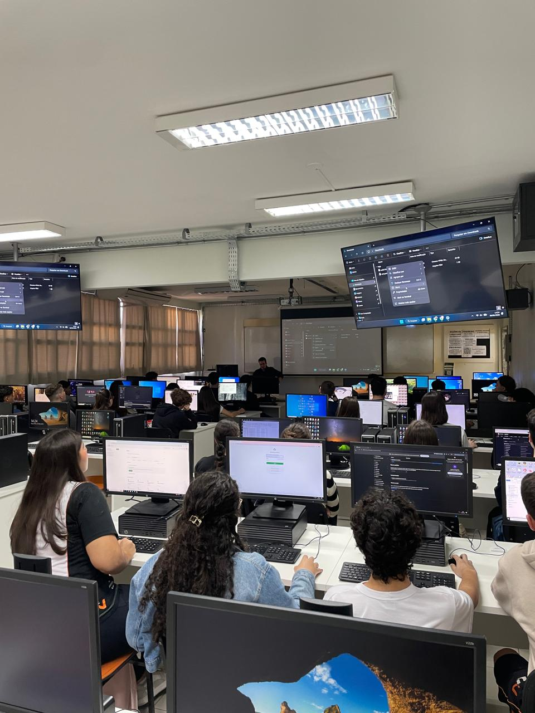

Relatório – 8ª Aula
Data: 30/06/2026
Turma: A
Instrutor:Victor
Formulários em HTML
A aula começou com uma apresentação teórica conduzida pelo instrutor Victor sobre formulários em HTML, detalhando as tags "form", "label" e "input", além de tipos de campos como checkbox, radio, select e button. Para ilustrar a teoria, o instrutor demonstrou exemplos práticos no Visual Studio Code e exibiu telas reais de login da Wikipédia e do Google. Em seguida, os alunos partiram para uma atividade prática de desenvolvimento de uma tela de cadastro completa. Como o conteúdo gerou um volume de dúvidas maior que o costumeiro, atuei diretamente no suporte, explicando a função dos novos atributos e sugerindo o uso da tag "br" para melhorar a organização visual do layout. Com o auxílio passo a passo, todos conseguiram estruturar o formulário e realizar o upload do projeto finalizado em seus repositórios do GitHub com sucesso antes dos avisos de encerramento.
